River Raid
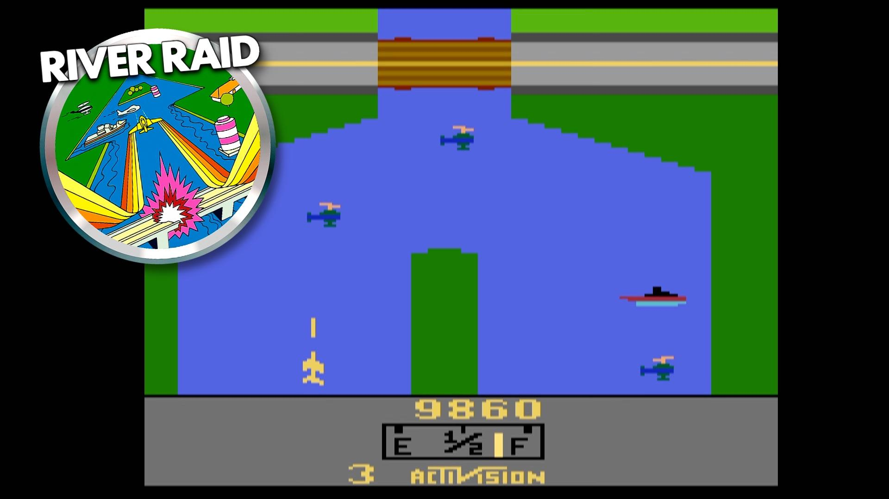
River Raid é um jogo de avião em que o jogador precisa passar por um rio, destruir inimigos e reabastecer o avião.
Ver vídeoTrabalho desenvolvido para a disciplina TT905 - Programação Web.
Este site apresenta alguns videogames antigos que fizeram muito sucesso em diferentes épocas. Foram escolhidos quatro consoles clássicos: Atari 2600, Phantom System, Super Nintendo e PlayStation 1. Em cada seção são mostradas informações sobre o videogame e três jogos marcantes.
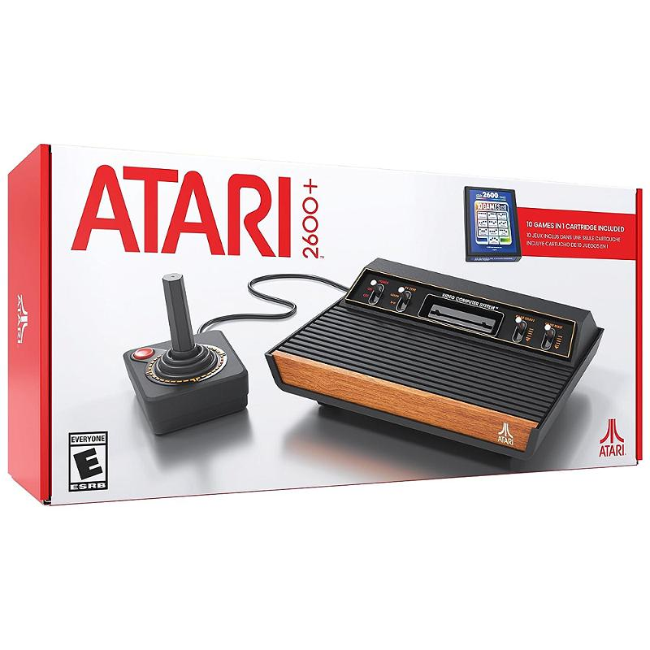
O Atari 2600 foi um dos videogames mais conhecidos da história. Ele fez muito sucesso por permitir que as pessoas jogassem em casa usando cartuchos. Seus gráficos eram simples, mas para a época representavam uma grande novidade.

River Raid é um jogo de avião em que o jogador precisa passar por um rio, destruir inimigos e reabastecer o avião.
Ver vídeo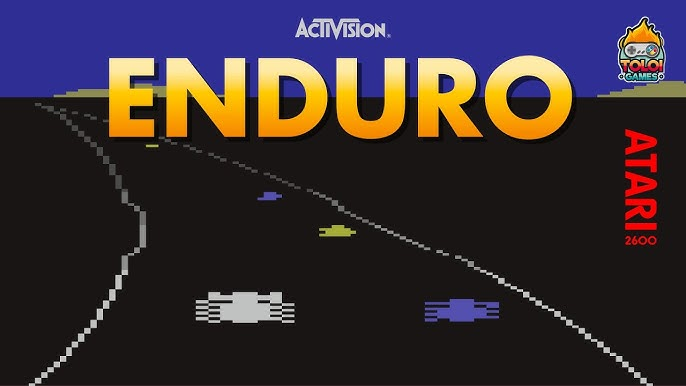
Enduro é um jogo de corrida em que o objetivo é ultrapassar carros na estrada. O jogo simula mudanças de clima e de horário.
Ver vídeo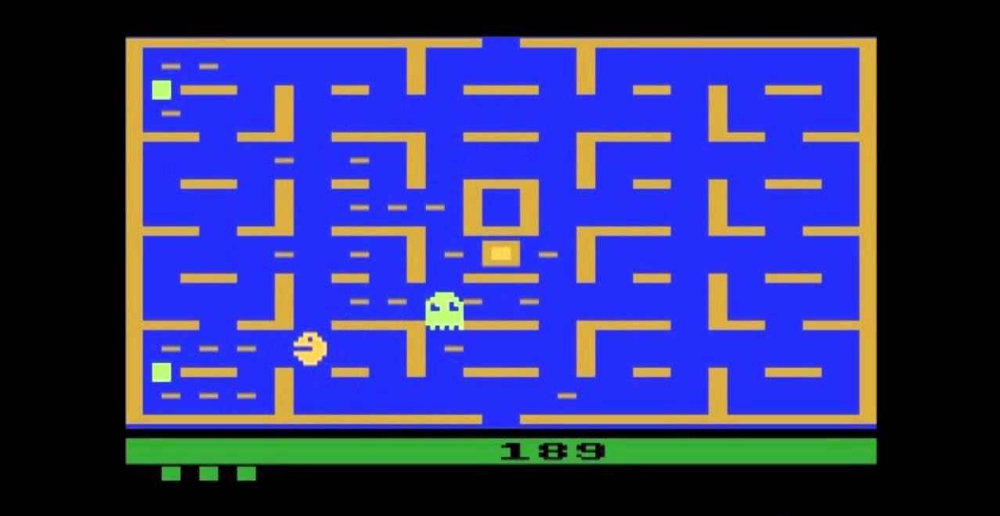
Pac-Man é um clássico em que o personagem deve comer pontos em um labirinto sem ser capturado pelos fantasmas.
Ver vídeo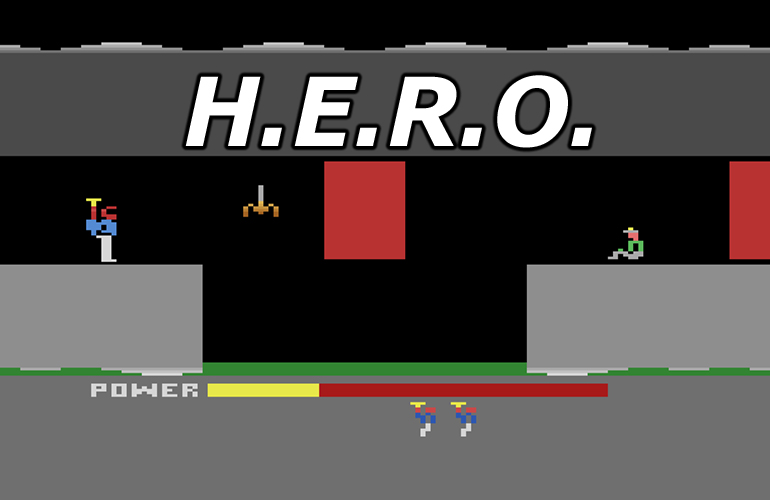
H.E.R.O. é um jogo de aventura em cavernas, no qual o personagem usa uma mochila com hélice para salvar pessoas.
Ver vídeo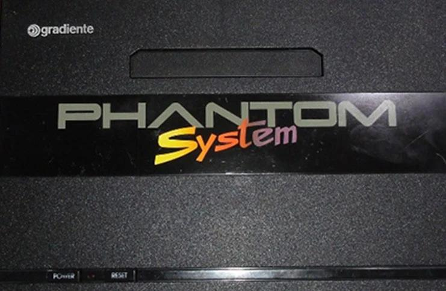
O Phantom System, fabricado pela Gradiente, foi um videogame muito conhecido no Brasil. Ele ficou popular por trazer jogos compatíveis com o NES e por marcar a infância de muitos jogadores brasileiros.
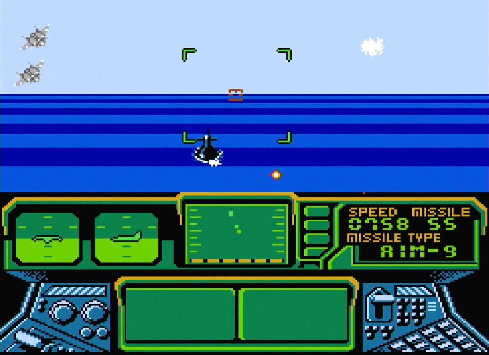
Top Gun é um jogo baseado no filme de mesmo nome. Nele, o jogador controla um avião de combate e enfrenta missões aéreas.
Ver vídeo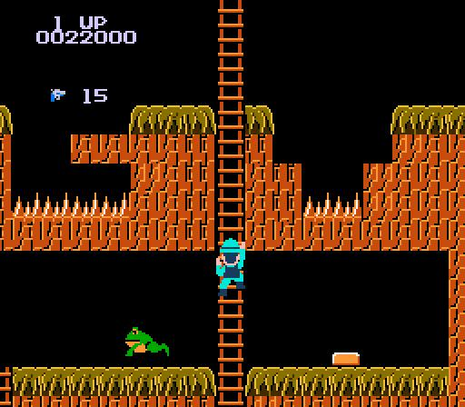
Super Pitfall é um jogo de aventura e exploração com fases cheias de obstáculos, inimigos e caminhos escondidos.
Ver vídeo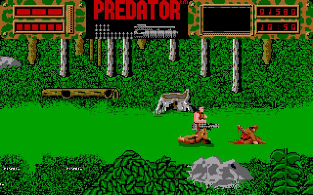
Predator é um jogo de ação inspirado no filme. O jogador enfrenta inimigos e precisa sobreviver a diferentes desafios.
Ver vídeo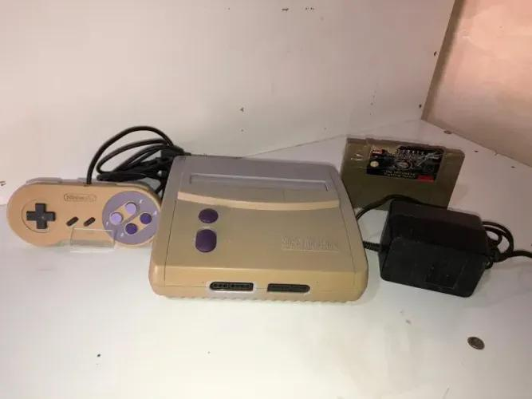
O Super Nintendo foi um dos consoles mais importantes dos anos 1990. Ele trouxe gráficos melhores, sons mais avançados e muitos jogos considerados clássicos até hoje.
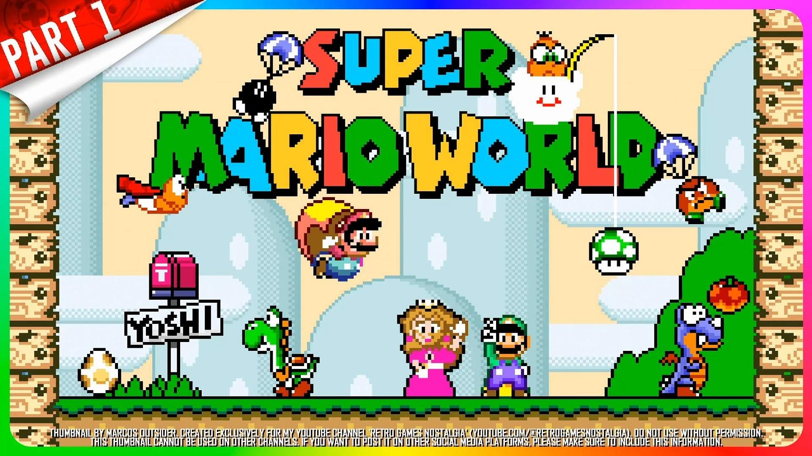
Super Mario World é um dos jogos mais famosos do console, com fases coloridas, caminhos secretos e a presença do Yoshi.
Ver vídeo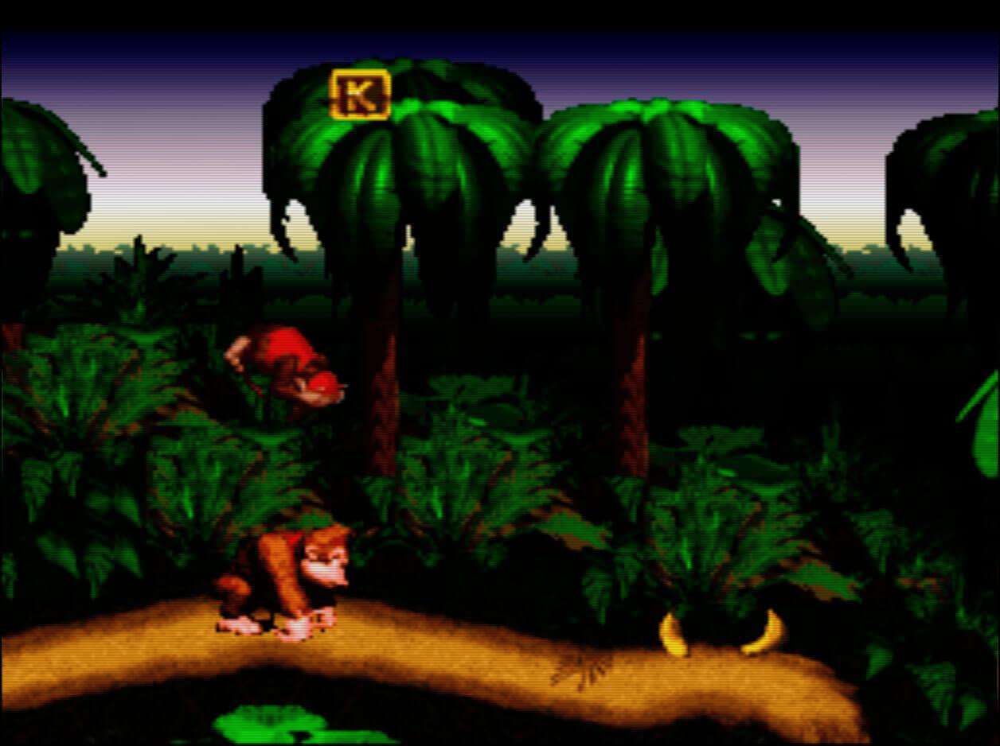
Donkey Kong Country ficou conhecido pelos gráficos marcantes e pelas fases desafiadoras com Donkey Kong e Diddy Kong.
Ver vídeo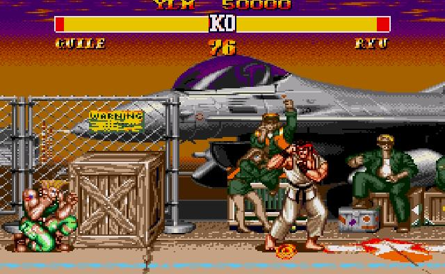
Street Fighter II é um dos jogos de luta mais famosos da história, com vários personagens e golpes especiais.
Ver vídeo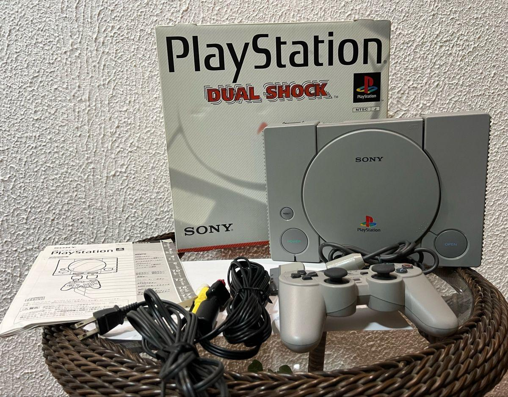
O PlayStation 1 foi muito importante para a popularização dos jogos em 3D. Ele marcou uma nova geração de consoles e trouxe jogos com visual mais realista e histórias mais elaboradas.
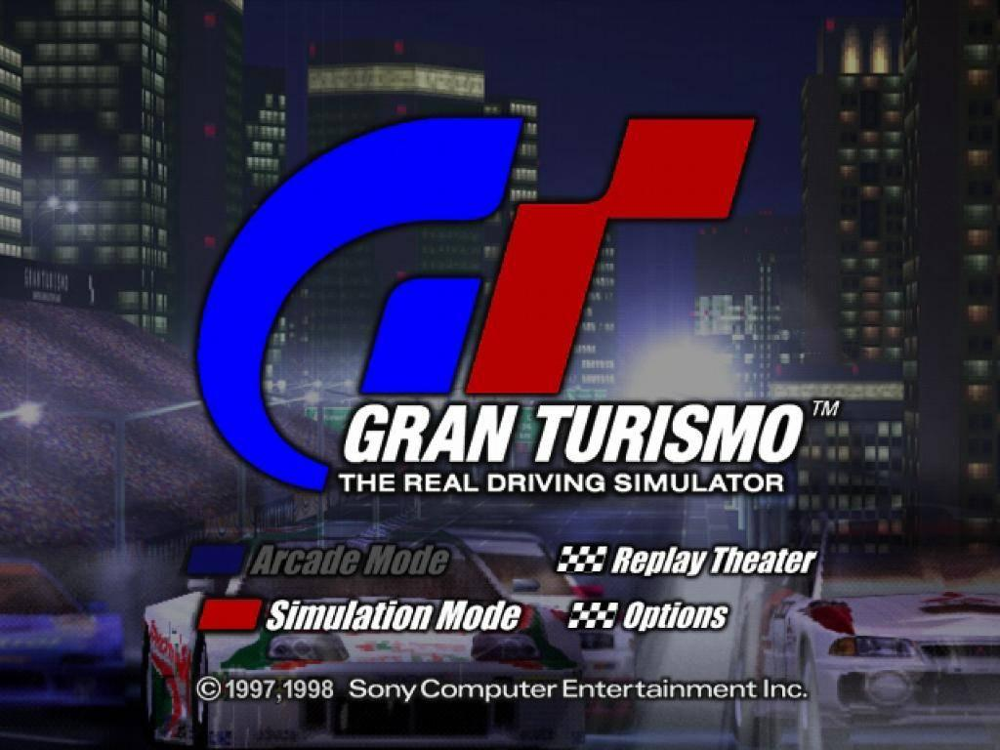
Gran Turismo é um jogo de corrida conhecido pelo seu realismo, com vários carros, pistas e estilo mais simulador.
Ver vídeo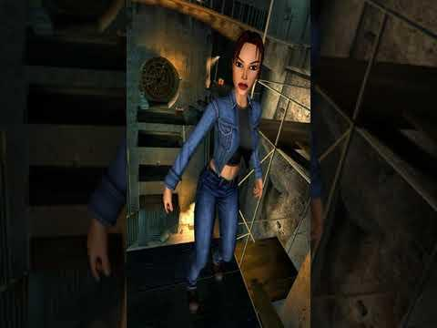
Tomb Raider é um jogo de aventura em que Lara Croft explora ruínas, resolve enigmas e enfrenta perigos.
Ver vídeo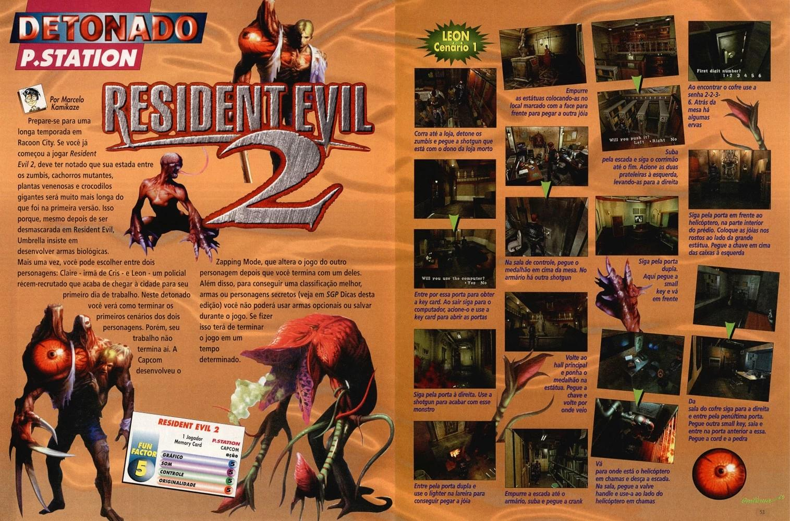
Resident Evil é um jogo de terror e sobrevivência que marcou muito o PlayStation 1, com clima tenso e desafios de exploração.
Ver vídeo